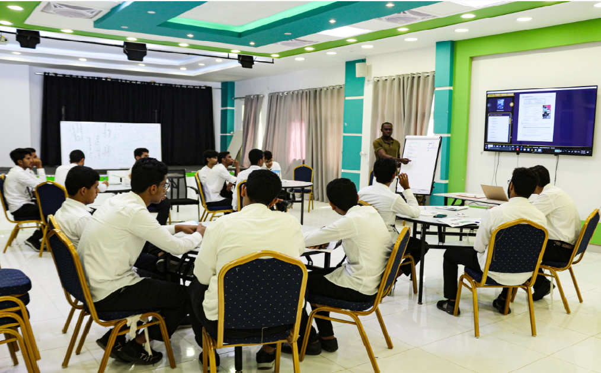
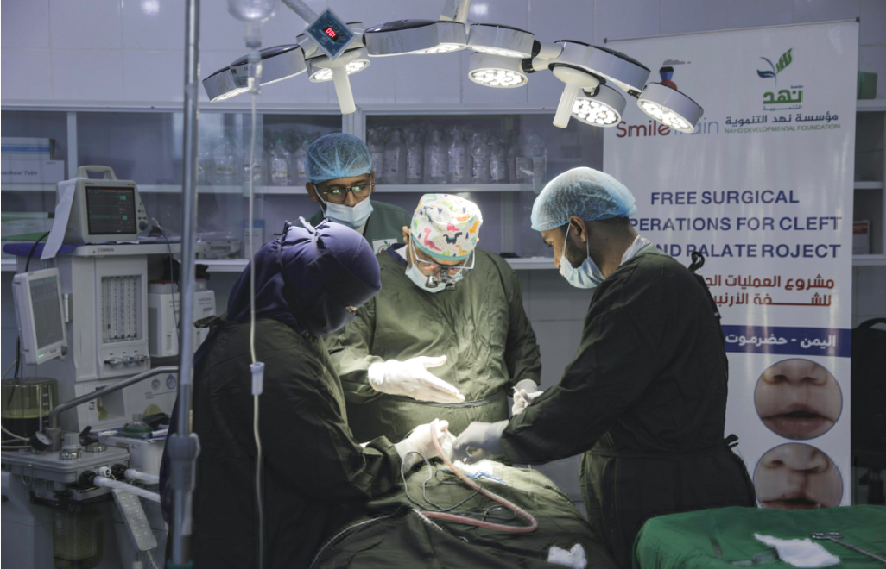
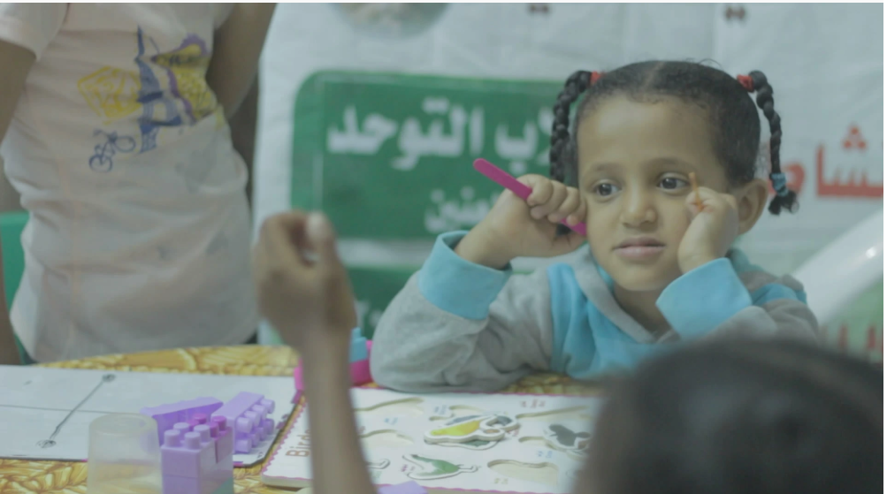

القطاعات
قطاع التعليم
فرص التعليم في اليمن تتلاشى نتيجة للأوضاع الإنسانية الصعبة والتي أدت إلى أن 2000 مدرسة غير صالحة للتعليم وحرمان أكثر من مليوني تلميذ من التعليم وكذلك انقطاع رواتب المعلمين وتضرر التعليم الأكاديمي والذي يعد من أكبر التحديات في قطاع التعليم. 5.5 ملايين طفل محتاج. هناك نحو 10 ملايين طفل متضرر من الأزمة والذين هم في سن التعليم، أي أنهم يشكلون ثلث مجموع السكان، وتشير التقديرات إلى أن من بين هؤلاء الأطفال العشرة ملايين نحو 8.1 ملايين من الأولاد والفتيات في سن الدراسة بحاجة إلى المساعدة التعليمية. تعمل مؤسسة نهد التنموية على مبدأ ضمان التعليم العام والتعليم الأكاديمي وأحقيته للجميع سعياً منها لتحقيق الهدف الرابع من أهداف التنمية المستدامة وتعزيزفرص التعلم مدى الحياة، من خلال دعم العملية التعليمية وتكافؤ الفرص وتطوير أدواتها والاستجابة للطوارئ والتعاطي معها بفعالية. تشمل تدخلاتنا التعليمةتعزيز النظام التعليمي وضمان الوصول الى الخدمات التعليمية واستمرارها للطلاب في التعليم الابتدائي والثانوي والجامعي والتعليم المهنيكما تهتم برامجنا بشكل خاص بتعليم الفتاة من خلال إيجاد بيئة تعليمية مشجعة لهاودعم برامج البحث العلمي.
قطاع الصحة
تدهور القطاع الصحي والنظم الصحية في اليمن يلقي بظله لينتج أسوأ أزمة إنسانية في العالم، حيث أن 51٪ فقط من المرافق الصحية تعمل بشكل كامل وتلك التي لا تزال تعمل تعاني من نقص حاد في الموظفين وغير قادرة على تقديم الخدمات الصحية الحيوية، وأن 67 مديرية من أصل 333 مديرية، لا يوجد فيها أطباء حسب خطة الاستجابة الإنسانية لمكتب الأمم المتحدة للشؤون الإنسانية (OCHA). وتشير التقديرات إلى أن 5 مليون امرأة وفتاة هن في سن الإنجاب، وأن 1.7 مليون امرأة حامل ومرضع لديهن فرص محدودة أو قد تكون معدومة للحصول على خدمات الصحة الإنجابية، بما في ذلك رعاية ما قبل الولادة والولادة الآمنة ورعاية ما بعد الولادة وتنظيم الأسرة وخدمات الطوارئ لحالات الولادة. أدى تفشي جائحة فيروس كورونا المستجد إلى زيادة المعاناة وتفاقم الاحتياجات الحالية وإرهاق الخدمات الصحية وغيرها من الخدمات الأساسية. في عام 2020، تسبب الفيروس في إحداث ضغط إضافي على المرافق القائمة وأدى إلى تراجع الاستفادة من الخدمات الصحية. تولي مؤسسة نهد التنموية القطاع الصحي اهتماما كبيراً من خلال تدخلاتنا النوعيّة لتحسين الوصول للخدمات الصحية للمجتمعات الفقيرة والمهمشة، وذلك من خلال تحديد الأسباب الجذرية للتحديات التي تواجه الرعاية الصحية، حيث نعمل على مستوى الأفراد والمجتمعات بوضع حلول مبتكرة تساعد في تقديم خدمات رعاية صحية عالية الجودة. تشمل تدخلاتنا تقديم الرعاية الصحية في المجالات المختلفة في القطاع الصحي مثل: تعزيز النظام الصحي ومكافحة الأوبئة والأمراض والصحة الإنجابية وصحة الأطفال وكبار السن والدعم النفسي ورفع قدرات العاملين الصحيين حيث تهدف تدخلاتنا الى خلق بيئة إيجابية مواتية للوصول الى الخدمات صحية.
قطاع الحماية
لازال السكان في اليمن يوجهون أزمة حماية شديدة خلفها النزاع وفقاً والتقارير الدولية الأخيرة، ويواجهون موجات نزوح خلفها الصراع مما يشكل مخاطر تتعلق بسلامتهم وبقائهم على قيد الحياة وسلب الحقوق الأساسية المكفولة لهم وتدهور العلاقات السلمية بين الأسر والمجتمعات. أدت سنوات من المعاناة الإنسانية المستمرة إلى خسائر فادحة وأثر واضح في صحة اليمنيين النفسية، ولا سيما النساء والفتيات. وفقًا لدراسة أجريت عام 2017 تشير إلى أن ما يقارب من واحد بين كل 5 أشخاص يعانون من اضطرابات نفسية. ومع هذا، لا تزال الرعاية الصحية النفسية نادرة في اليمن. ويخشى من يعانون من الاضطرابات النفسية أو عائلاتهم من الوصمة المرتبطة بهذه الاضطرابات في المجتمع اليمني فيما نسبة الأطباء النفسيين لكل مجموعة سكانية غير كافية. تقوم المؤسسة بتقديم البرامج الدعم النفسي والحماية للفئات الأكثر ضعفا المتضررين من حالات الطوارئ الإنسانية، مع إيلاء اهتمام خاص للأطفال والنساء وذلك بتوفير البيئات الآمنة لهم ودعم الفئات المتضررة من الحروب والأزمات وفقاً ومعايير العمل الإنساني والحماية.